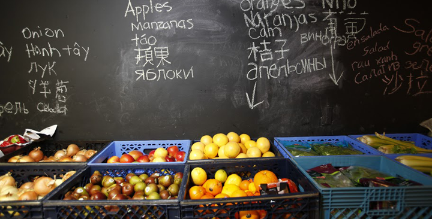

Rainier Valley Food Bank
"On May 1, 1991, our food bank opened as a volunteer-led neighborhood pantry serving 50 families a week. Founded as Northwest Community Services, the organization experienced a rapid rise in demand as the nation’s economy began to decline in 2008. In response to this huge increase in the number of families in need of food in our neighborhood, the board changed the organization’s name to Rainier Valley Food Bank, and hired its first professional executive director in 2009. RVFB is currently the busiest food bank in Seattle, out of 26 area food banks, operating from its tiny 1,200-square foot facility. The food bank fulfills over 6,000 requests for food each month. Learn more about our impact on the community" -Rainier Valley Food Bank
Website
Address
4205 Rainier Ave S Seattle, WA 98118
Phone Number
206-723-4105
Open/Closed Status
Open
Hours of Operation
Tuesday–Saturday: 8am – 2pm